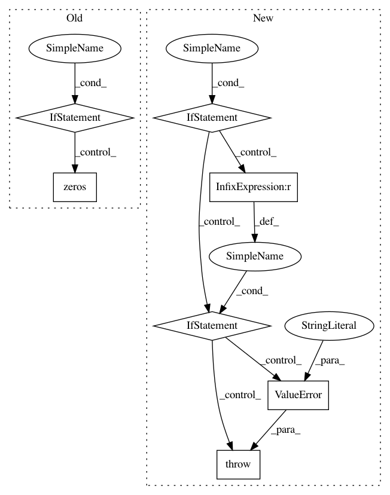

529456c17464022d42e1c343bec52f2d4d77e79b,gpytorch/likelihoods/multitask_gaussian_likelihood.py,HomoskedasticMultitaskGaussianLikelihood,__init__,#HomoskedasticMultitaskGaussianLikelihood#Any#Any#Any#Any#Any#,135
Before Change
self.register_parameter(
name="log_noise", parameter=torch.nn.Parameter(torch.zeros(batch_size, 1)), prior=log_noise_prior
)
if rank == 0:
self.register_parameter(
name="log_task_noises",
parameter=torch.nn.Parameter(torch.zeros(batch_size, num_tasks)),
prior=task_prior,
)
else:
self.register_parameter(
name="task_noise_covar_factor", parameter=torch.nn.Parameter(torch.randn(batch_size, num_tasks, rank))
)
if task_prior is not None:
self.register_derived_prior(
name="MultitaskErrorCovariancePrior",
prior=task_prior,
parameter_names=("task_noise_covar_factor", "log_noise"),
transform=_eval_covar_matrix,
)
self.num_tasks = num_tasks
def forward(self, input):
After Change
super(_MultitaskGaussianLikelihoodBase, self).__init__(log_noise_covar=log_noise_covar)
if rank != 0:
self.register_parameter(
name="task_noise_corr_factor", parameter=torch.nn.Parameter(torch.randn(batch_size, num_tasks, rank))
)
if task_correlation_prior is not None:
self.register_derived_prior(
name="MultitaskErrorCorrelationPrior",
prior=task_correlation_prior,
parameter_names=("task_noise_corr_factor",),
transform=_eval_corr_matrix,
)
elif task_correlation_prior is not None:
raise ValueError("Can only specify task_correlation_prior if rank>0")
self.num_tasks = num_tasks
def forward(self, input, *params):
In pattern: SUPERPATTERN
Frequency: 3
Non-data size: 7
Instances
Project Name: cornellius-gp/gpytorch
Commit Name: 529456c17464022d42e1c343bec52f2d4d77e79b
Time: 2018-10-29
Author: balandat@fb.com
File Name: gpytorch/likelihoods/multitask_gaussian_likelihood.py
Class Name: HomoskedasticMultitaskGaussianLikelihood
Method Name: __init__
Project Name: stellargraph/stellargraph
Commit Name: 90c4c1e7dc3c3801fa7f62f17cf0ed83215028a5
Time: 2019-01-22
Author: andrew.docherty@data61.csiro.au
File Name: stellargraph/layer/graphsage.py
Class Name: GraphSAGEAggregator
Method Name: call
Project Name: cornellius-gp/gpytorch
Commit Name: 199db3617508c0512e3626ff20a0fcd257dae8d2
Time: 2018-10-29
Author: balandat@fb.com
File Name: gpytorch/likelihoods/multitask_gaussian_likelihood.py
Class Name: MultitaskGaussianLikelihood
Method Name: __init__